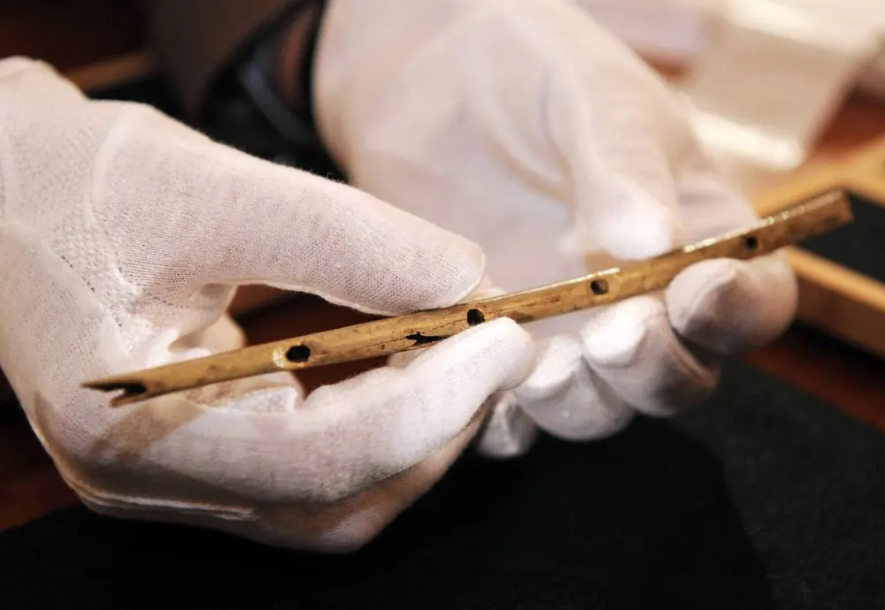

這是舊站 oliverflute.com 的文章，內容保留原貌，只修正排版。其中的考試日期、價錢和課程安排屬寫作當時的資料，請以現行公布為準。
張老師為大家分享一些和生活相關，少為人知的音樂冷知識，
音樂改變味覺
餐廳裡播放的背景音樂大多是為了讓食物更美味！牛津大學之前一個叫 Bittersweet Study 的實驗發現，低音的銅管會增強對酸的味覺，而輕亮的聲音像是鋼琴則是會加強對於甜的味覺。已經有食品公司試圖改造他們的包裝袋，通過發出脆又響亮的聲音讓消費者覺得這袋東西比別人要好吃，或許過幾年後就會有“聲音強化”的食品出現了。
音樂説明你學習專心
佛羅裏達大學曾經長期觀察過動兒，他們發現大部的小孩都不能在看電視的時候專心，不過當他們在聽音樂時可以讓自己靜下來。不過前提是你只是放著你喜歡的歌，然後坐下來好好的閱讀書本，而不是一直用手機找你今天想聽的歌，和明星的最新消息啦！
唱歌對你有益
看看 Rolling Stone（英國60年代很紅的搖滾樂隊） ，他們就是一直在唱歌才能讓他們撐過年輕時對於藥物和性病的摧殘。事實上，Dr James Le Fanu 在英國的報告指出，喜歡唱歌的人肺活量會提升，而且還會提振精神。唱歌時顏面肌肉也會因為有運動到讓臉看起來更年輕，讓儀態變得更標準。也因為唱歌是種全身性的運動也會讓人比較健康。 Mick Jagger（滾石樂團創始成員之一） 應該是個不錯的範例。

長笛是目前出土最古老的樂器
牛津大學在德國的一個山洞中發現一個長笛，根據分析他可能是在 42000 前的樂器，這也表示已現在的出土文化來講長笛是人類最早的樂器。這些人類祖先可能使用這個長笛進行宗教或娛樂，而人類亦因為樂器的發現，以音樂來凝聚人心以及建立更大的社交圈，是人類文明進步十分重要的一環。
五音不全的人不善於社交
澳洲麥覺理大學研究指出，人類大腦中音樂和語言區有強烈的關聯，上人類在講話時的語氣和腔調，與唱歌有很大的關係。Bill Thompson 教授曾說，如果一個人如果無法分辨音樂的一些細微變化，那他就無法去聽出人們講話時，哪些話是諷刺的語氣，哪些話是情緒上的波動。缺乏分辨能力的人，在社交場合上容易會錯意或者是講錯話。